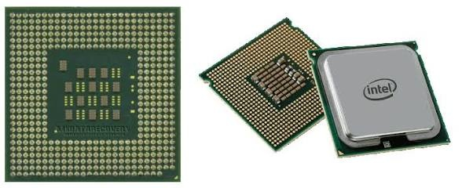
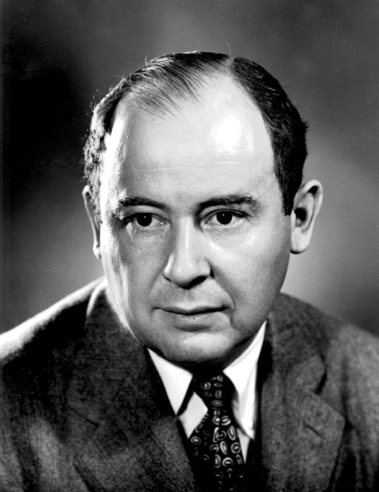
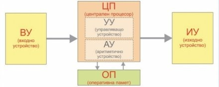

Управлява инструкциите на програмите и контролира работата на останалите части. Съвременните компютри са изградени на принципа на Фон-Ноймановата архитектура (1944-1946 г.), състояща се от: Аритметично-логическо устройство (АЛУ / АУ): Извършва аритметични (събиране, изваждане) и логически операции (сравняване). Управляващо устройство (УУ): Координира дейностите в компютъра, извлича инструкции от паметта и подава сигнали към другите устройства. Централният процесор (ЦП / CPU) е основният компонент, който изпълнСистемна шина (BUS): Действа като високоскоростна магистрала от електрически пътища за пренос на данни и адреси между компонентите. Регистри: Специални клетки памет вътре в процесора за временно съхранение на данни и междинни резултати. Основни характеристики на процесора: Тип/модел, тактова честота (измервана в MHz или GHz), обем на кеш-паметта и разрядност на шината (съвременните са 64-битови). |
   |